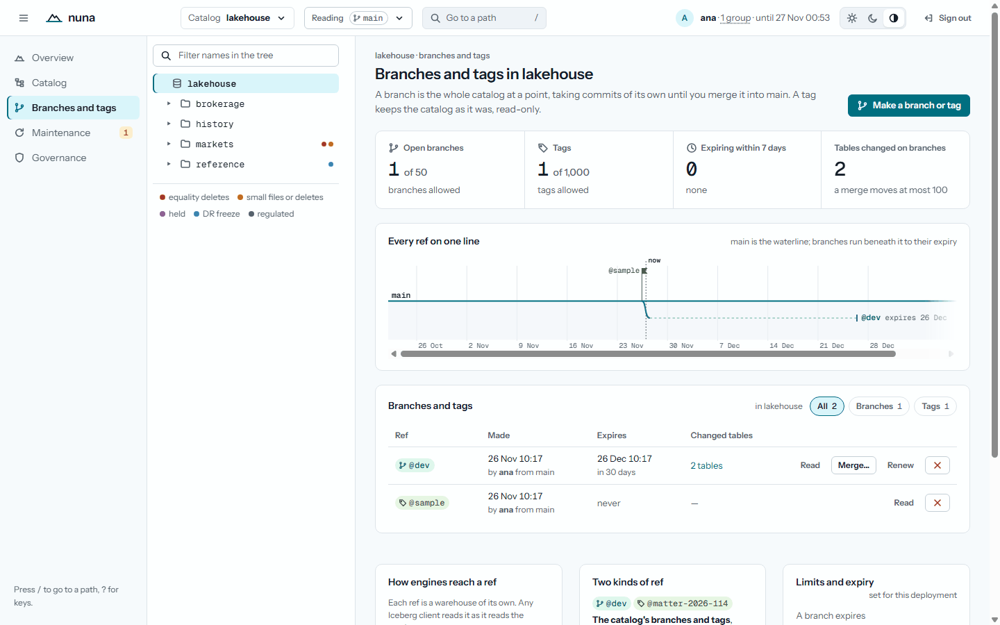
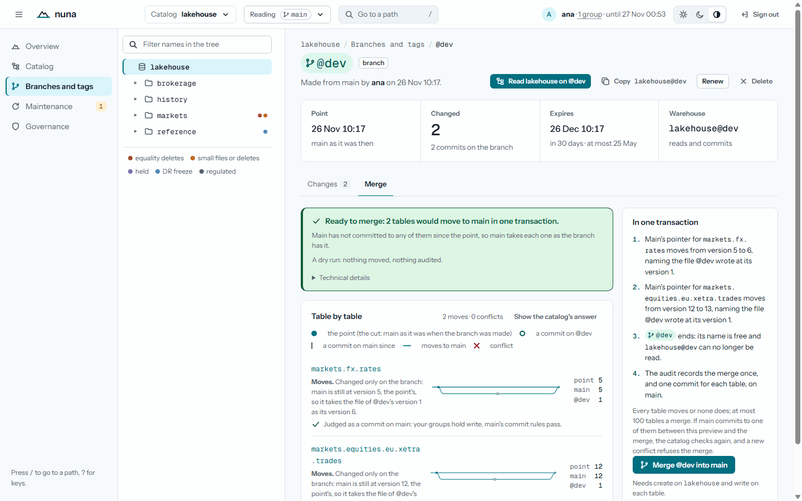

Work on a catalog branch
Write to the demo's catalog branch dev from an engine, compare it with main in the console, merge it into main, tag the result and make the branch again. It takes about 20 minutes.
What you need
- The demo running, as Run nuna on your laptop leaves it.
- The console at
https://localhost:8181/ui/and CloudBeaver athttps://localhost:8185, both signed in asana. NUNAandTOKENset forana, as in Create your first table.
A catalog branch holds every table of the catalog as it was at one moment and takes commits of its own, without copying a file. A merge moves what the branch changed onto main, every table in one transaction. An engine reaches a branch as a warehouse of its own, lakehouse@dev.
Look at the branch the demo made
-
Select Branches and tags in the console's rail.
The demo made two refs when it first loaded its sample data, as
ana: branch@dev, on which its lake writer committed the next day's trades and rates (2026-11-11) tomarkets.equities.eu.xetra.tradesandmarkets.fx.rates, and tag@sample, which keeps the sample data as it was loaded. -
List the same refs with curl.
curl -sS --cacert ~/.nuna-demo/tls/ca.crt --ssl-revoke-best-effort \ -H "Authorization: Bearer $TOKEN" \ "$NUNA/management/v1/catalogs/lakehouse/refs"{ "refs": [ { "id": "738f98ad-37ba-4e50-b472-d6ba96857ccb", "name": "dev", "kind": "branch", "from": "main", "created-at": "2026-11-26T15:17:22.587Z", "created-by": "ana", "expires-at": "2026-12-26T15:17:22.587Z", "max-expires-at": "2027-05-25T15:17:22.587Z", "expiring": false, "cut-at": "2026-11-26T15:17:22.587Z", "changed-count": 2 }, { "id": "82dae882-ca9c-461e-a684-52ecb2aadfc7", "name": "sample", "kind": "tag", "from": "main", "created-at": "2026-11-26T15:17:33.490Z", "created-by": "ana", "cut-at": "2026-11-26T15:17:33.490Z" } ], "limits": { "max-branches": 50, "max-tags": 1000, "max-merge-tables": 100, "branch-idle-expiry": "PT720H", "branch-max-life": "PT4320H", "expiry-warning": "PT168H", "max-description": 200 }, "may": { "create": true } }A branch expires 30 days (
PT720H) after it was made or last renewed, and never later than 180 days after it was made. A tag never expires.

lakehouse: the branch @dev and the tag @sample.Write to the branch
-
Add a rate for 2026-11-11 to
markets.fx.ratesondev.curl cannot write rows, so this commit changes a table property instead. It is a commit on the branch all the same, through the warehouse
lakehouse@dev;%1Fseparates the namespace's levels in a path.curl -sS --cacert ~/.nuna-demo/tls/ca.crt --ssl-revoke-best-effort \ -X POST "$NUNA/v1/lakehouse@dev/namespaces/markets%1Ffx/tables/rates" \ -H "Authorization: Bearer $TOKEN" \ -H "Content-Type: application/json" \ -d '{"requirements": [], "updates": [{"action": "set-properties", "updates": {"comment": "Reviewed on dev"}}]}'The answer is the table's new metadata on the branch. Its
metadata-locationends in.branch-id.metadata.json, where id is the branch's id: main's metadata is untouched.Start
spark-sqlwith a second catalog whose warehouse is the branch. Its settings are those oflakehousein Create your first table, with the warehouse changed:spark-sql \ --packages org.apache.iceberg:iceberg-spark-runtime-4.1_2.13:1.12.0,org.apache.iceberg:iceberg-aws-bundle:1.12.0 \ --conf spark.sql.extensions=org.apache.iceberg.spark.extensions.IcebergSparkSessionExtensions \ --conf spark.sql.catalog.lakehouse_dev=org.apache.iceberg.spark.SparkCatalog \ --conf spark.sql.catalog.lakehouse_dev.type=rest \ --conf spark.sql.catalog.lakehouse_dev.uri=https://localhost:8181/ \ --conf spark.sql.catalog.lakehouse_dev.warehouse=lakehouse@dev \ --conf "spark.sql.catalog.lakehouse_dev.token=$TOKEN" \ --conf spark.sql.catalog.lakehouse_dev.header.X-Iceberg-Access-Delegation=vended-credentials \ --conf spark.sql.catalog.lakehouse_dev.io-impl=org.apache.iceberg.aws.s3.S3FileIOINSERT INTO lakehouse_dev.markets.fx.rates VALUES ('USDJPY', 152.07, TIMESTAMP '2026-11-11 16:00:00 UTC', 'ECB');The demo's Trino has a catalog
lakehouse_devwhose warehouse islakehouse@dev, besidelakehouse, which reads and writes main. Run this in CloudBeaver on nuna (Trino, as ana):INSERT INTO lakehouse_dev."markets.fx".rates VALUES ('USDJPY', 152.07, TIMESTAMP '2026-11-11 16:00:00 UTC', 'ECB');Trino names a nested namespace by its dotted path, in quotes.
import os from datetime import datetime, timezone import pyarrow as pa from pyiceberg.catalog import load_catalog dev = load_catalog("lakehouse_dev", **{ "type": "rest", "uri": "https://localhost:8181", "warehouse": "lakehouse@dev", "token": os.environ["TOKEN"], "header.X-Iceberg-Access-Delegation": "vended-credentials", }) rates = dev.load_table("markets.fx.rates") rows = pa.schema([("pair", pa.string()), ("rate", pa.float64()), ("as_of", pa.timestamp("us", tz="UTC")), ("source", pa.string())]) rates.append(pa.Table.from_pylist([ {"pair": "USDJPY", "rate": 152.07, "as_of": datetime(2026, 11, 11, 16, 0, tzinfo=timezone.utc), "source": "ECB"}, ], schema=rows))A branch takes commits to the tables it holds. Creating, dropping or renaming a table or namespace happens on main only; through
lakehouse_dev, Trino refuses aCREATE TABLEitself withServer does not support endpoint: POST /v1/{prefix}/namespaces/{namespace}/tables.Not documented yet: how Spark and PyIceberg on your laptop reach the demo's table files. The server vends
s3.endpointhttp://s3:9000, which resolves only inside the demo's cluster; the Spark and PyIceberg tabs have not been run from outside it.
Compare the branch with main
-
Select
@devon the Branches and tags page.The branch's page opens on its Changes tab, which lists each table the branch changed since it was cut from main.
-
Read the same list with curl.
curl -sS --cacert ~/.nuna-demo/tls/ca.crt --ssl-revoke-best-effort \ -H "Authorization: Bearer $TOKEN" \ "$NUNA/management/v1/catalogs/lakehouse/refs/dev"The answer is the branch with a
changedarray: for each table, itsnamespace,name,kind, the version main had when the branch was cut (cut-version) and the branch's ownversion.
Merge the branch
-
Select Merge… on
@dev's line of the Branches and tags page.The branch's Merge tab opens with the server's dry run, which moves nothing. It says Ready to merge: 2 tables would move to main in one transaction. and, for each table, how main would judge the commit: the privilege your groups hold for it and whether main's commit rules pass. The trades table's legal hold allows the merge, because a merge only adds snapshots.
The same dry run over the API:
curl -sS --cacert ~/.nuna-demo/tls/ca.crt --ssl-revoke-best-effort \ -X POST "$NUNA/management/v1/catalogs/lakehouse/refs/dev/merge?dry-run=true" \ -H "Authorization: Bearer $TOKEN"Its answer has
"dry-run": true,answer.codewith the status the merge would get (200when it would succeed),changedwith the number of tables,may-merge, and per tablemoves,verdict.allowedandright.needs, the privilege the move needs on main:writefor data alone,modifyfor a change to the table's definition, such as a property. -
Select Merge @dev into main.
A dialog shows each table's version on main now and after the merge.
-
Select Merge into main.
The console says Merged @dev into main with the time, and lists main's new version of each table. The branch has ended: its name is free, and
lakehouse@devanswers404. Over the API, the merge is the same call without?dry-run=true; it answers200with each table's newversionandmetadata-locationon main.If the console says
@dev cannot merge: 1 table changed on main too, someone committed to one of the branch's tables on main after the branch was cut, for example withdemo/demo.sh rate, which appends to main's rates. The server refuses the whole merge with409RefMergeConflictException, because every table moves or none does. Make a new branch from main and redo the change there.

Tag the result
-
Select Make a branch or tag on the Branches and tags page.
-
Select Tag as the Kind, enter
tutorial-1as the Name and choose main, as it is now as From.Names take letters, digits, dot, dash and underscore, and compare without case. Purpose (optional) takes one line that everyone who can see the catalog's refs reads.
-
Select Make it.
The console says Made the tag @tutorial-1. Over the API, the same tag is one call; the server answers
201with the tag:curl -sS --cacert ~/.nuna-demo/tls/ca.crt --ssl-revoke-best-effort \ -X POST "$NUNA/management/v1/catalogs/lakehouse/refs" \ -H "Authorization: Bearer $TOKEN" \ -H "Content-Type: application/json" \ -d '{"name": "tutorial-1", "kind": "tag", "from": "main", "description": "After the tutorial merge"}'{ "id": "6e6502b4-84ae-4427-aafd-9d4df6584733", "name": "tutorial-1", "kind": "tag", "from": "main", "created-at": "2026-11-27T03:29:21.841Z", "created-by": "ana", "description": "After the tutorial merge", "cut-at": "2026-11-27T03:29:21.841Z" }A name already taken answers
409withRef already exists: tutorial-1.
Make the branch again
-
Make a branch named
devfrom main.Select Make a branch or tag, select Branch as the Kind, enter
devas the Name, choose main, as it is now as From and select Make it.curl -sS --cacert ~/.nuna-demo/tls/ca.crt --ssl-revoke-best-effort \ -X POST "$NUNA/management/v1/catalogs/lakehouse/refs" \ -H "Authorization: Bearer $TOKEN" \ -H "Content-Type: application/json" \ -d '{"name": "dev", "kind": "branch", "from": "main"}'The demo makes
devonly on a new lake, so it does not make it again on the nextupwhile@sampleexists.
What you did
You wrote to a catalog branch through its own warehouse, lakehouse@dev, while main stayed as it was. You compared the branch with main, previewed the merge with the server's dry run and merged both changed tables in one transaction. You tagged main as it stood after the merge and made the branch again for the next person. Next, take the tour of the console, or read Write, audit and publish with a branch to use branches in your own work.
See also
- Catalog branches and tags: how refs work, and how they differ from a table's own branches.
- The Branches and tags page: every element of the console's refs pages.
- Branches and tags API: every ref endpoint, with its refusals.
- Keep a point in time with a tag: reading through a tag and removing it.
How this page was checked
Written from catalog-server/src/main/java/nuna/catalog/server/governance/RefRoutes.java, the console's refs.js and route.js, demo/demo.sh (refs), demo/LakeWriter.java, demo/k8s/trino.yaml, demo/README.md (Branches and tags of the catalog), catalog-tests-engines/images/spark/run.sh and catalog-tests-engines/images/python/refs_matrix.py, checked against commit b3e8582f on 2026-11-26.
The demo's dev branch is shared, so this page's steps were not run on it. The API steps were run as ana on a branch of the same kind instead, tutorial-dev, on a table made for the purpose: making the branch, a set-properties commit through lakehouse@tutorial-dev, reading the branch, the dry run, the merge, making the tag tutorial-1, a commit through the tag, and a name already taken. The refs list and the tag's response shown are from those runs; everything made was removed afterwards.
The Spark, Trino and PyIceberg statements and the console steps were not run. The Trino statements and the console's merge words come from demo/README.md and refs.js; the Spark and PyIceberg settings from the engine tests' scripts, which run inside the cluster.